Ghid de montaj · Faza 1
Stalpii si podeaua
Pas cu pas, ca la mobila. Putine cuvinte, desene clare. Cititi un pas, il faceti, treceti la urmatorul. Pasii cu semn rosu sunt critici — acolo va opriti si verificati.
📋
Vrei stil IKEA, o fisa per etapa? 11 fise separate, fiecare cu piesele ei, desen izometric si verificare — de printat sau pe telefon, pe santier. Deschide fisele →
De ce ai nevoie
4
ST · stalpi 100×100
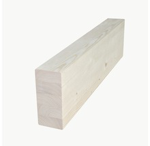
2
GR · grinzi glulam 90×200
6
JO · joiste 100×100
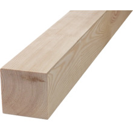
×2
PO · polite (offcut)
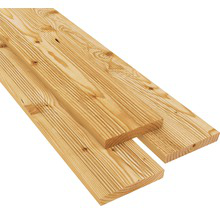
×17
DL · dusumea larice 28×145
×6
CF · contrafise (offcut)
×~6
PT · proptele temporare
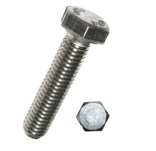
8 + tija
B2 ×8 baza + B1 tija polita · M12
1 pac
H1 · Heco 8×200 (structural)
~4 pac
H2·H3·H4 · conectori, blocaje, dusumea
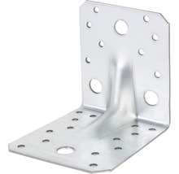
16
C1×4 + C2×12 · coltare
—
bormasina, cheie, fierastrau
1
Stalpii in ancore CRITIC
Aseaza toti 4 stalpii in ancorele din beton, la lungime mare — nu ii tai inca. Prinde suruburile doar slab (nu strange definitiv). Adu fiecare stalp perfect vertical (la plumb) pe doua fete. 2 proptele la baza fiecarui stalp; la cei 2 stalpi inalti din spate, si cate o proptea de varf .2 persoane PT · proptele B2 · M12 baza
Nu strange suruburile pana stalpii nu sunt perfect drepti (pasul 2).
Piese ST ×4 PT ×~6 B2 ×8
PT · proptele
ST
ST
slab
2
Trasare nivel + taiere stalpi fata CRITIC
+2200 = fata podelei. Transfera linia pe toti 4 stalpii cu nivela pe o scandura dreapta — nu masura separat.Marcheaza linia de sprijin la +1872 (cu 328 mai jos: grinda 200 + joista 100 + dusumea 28). Taie doar S3 si S4 (fata) la +1872. S1, S2 (spate) raman intregi. Teseste muchia; abia acum strange definitiv ancorele. nivela / laser fierastrau echer
Taie la 1872, NU la 2200 — altfel podeaua iese cu 328 mm prea sus.
Piese ST ×4
2200
=
nivela
ST
ST
3
Polita pe stalpii din spate CRITIC
Pe fata fiecarui stalp din spate (S1, S2), prinde un bloc de lemn 100×100 — polita . Fixeaz-o cu 2 buloane M12 (B1) prin polita in stalp, cu fata de sus la +1872 . Polita duce greutatea grinzii din spate.PO · polite B1 · M12 ×4
Piese PO ×2 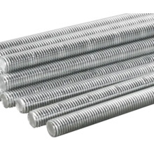
B1 ×4 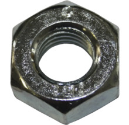
B4 ×4 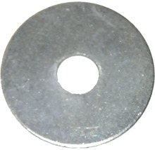
B3 ×8
+1872
PO · polita
ST
B1 ×2
4
Grinda din spate pe polita CRITIC
Ridicati in doi grinda din spate (glulam) si aseaz-o pe cele doua polite . Sta pe polita — nu o tineti voi. Prinde-o de stalpi cu H1 (o tin lipita). Verifica fata de sus la +2072 . 2 persoane GR spate H1
Grinda e grea — ridicati-o in doi. Sta pe polita, deci nu o tineti voi tot timpul.
Piese GR ×1 PO ×2 H1
5
Grinda din fata pe varful stalpilor CRITIC
Aseaza grinda din fata (glulam) PE varful stalpilor S3/S4, sprijin direct. Fixeaz-o cu cate un coltar C1 pe fiecare fata + suruburi H1 . Verifica: ambele grinzi perfect orizontale, varful la +2072 . GR fata C1 · coltar ×4 H1
Piese GR ×1 C1 ×4 H1
6
Monteaza cele 6 joiste CRITIC
Aseaza 6 joiste peste cele doua grinzi, din fata in spate, dintr-o singura bucata. Pozitii de la S4: 100 · 280 · 720 · 1120 · 1550 · 1980 mm . Capetele din fata ies 700 mm in consola (balconul). La fiecare reazem, coltar C2 — tine joista jos la consola (anti-ridicare). JO · joiste ×6 C2 · coltare ×12 H2
GR · grinda spate
GR · grinda fata
copac
JO ×6
rama gaura (offcut)
100
280
720
1120
1550
1980
7
Gaura copacului + masa
Intre joistele de la 280 si 720 (spre S4) pune 2 traverse = rama gaurii. Corcodusul trece prin gaura, in zona balconului ; il retezi la ~+2780 . Lasa joc 3–5 cm jur-imprejurul trunchiului. Blatul mesei se fixeaza de podea , prin cadrul lui, NU de copac . traverse (offcut) blat masa
Piese traverse ×2
podea balcon
copac Ø160
blat ~+2780
joc 3-5 cm
blat pe cadru propriu,
NU pe trunchi
8
Blocaje intre joiste
Bucati scurte (blocaje ), din offcut, intre joiste, peste fiecare grinda . Prinse cu H3 oblic. Opresc rasucirea joistelor — podea ferma. BL · blocaje H3
Piese BL ×10 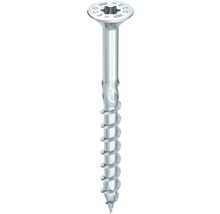
H3
grinda
joista
joista
BL
H3 oblic
9
Contravantuiri + scoatem proptelele de baza CRITIC
Monteaza contravantuirile (diagonale) in planul stang, drept si fata + sub nasul consolei. Prinse la ambele capete cu H1 — acum platforma e rigida. Scoate proptelele de la baza. Cele de la varful stalpilor inalti RAMAN pana la peretii din Faza 2.CF · contrafise ×6 H1
Nu scoate proptelele inainte de contrafise — structura se clatina fara ele.
Piese CF ×6 H1
CF · contrafisa
ST
GR
PT · scoate
10
Bate dusumeaua
Scanduri larice (DL ) peste joiste, perpendicular. 2 suruburi inox (H4) pe fiecare joista; gol 5 mm intre scanduri (un cui ca distantier).La copac, taie scandurile in jurul gaurii, cu joc. Da cu ulei (F1) dupa montaj. DL · scanduri ×17 H4 · 5×60 F1 · ulei
Piese DL ×17 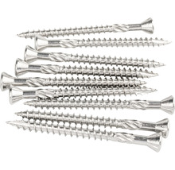
H4 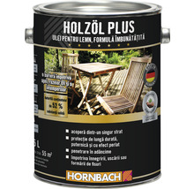
F1 ×2
5 mm
copac + joc
JO
DL
11
Balustrada + poarta CRITIC
Balustrada 1 m jur-imprejurul balconului, goluri <9 cm (inclusiv pe nasul consolei). Poarta pe partea S3 (opusa mesei-copac), unde urca scara.Stalpisorii bulonati de cadru (joiste/grinda), nu de dusumea. balustrada poarta · S3
Balustrada e ultima bariera la 2,2 m — prinde stalpisorii de cadru, nu de dusumea, si testeaza-i prin impingere.
podea / cadru
<9 cm
1 m
poarta S3
Faza 1 — stalpi, podea, balustrada, masa. Urmeaza Faza 2: pereti, acoperis, scara.

 ST ×4PT ×~6B2 ×8
ST ×4PT ×~6B2 ×8 C2 ×12
C2 ×12 H2
H2